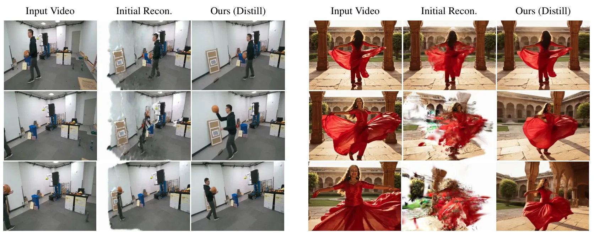
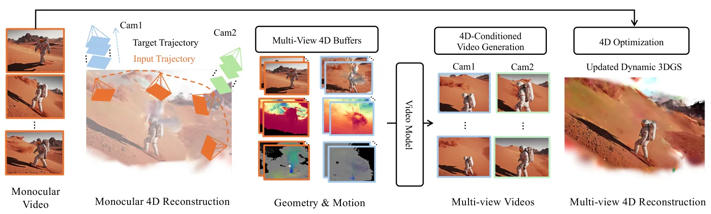
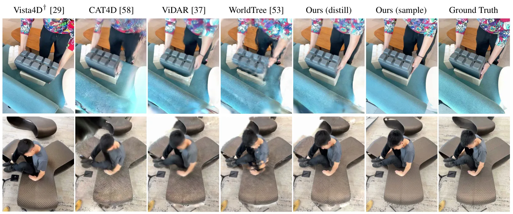
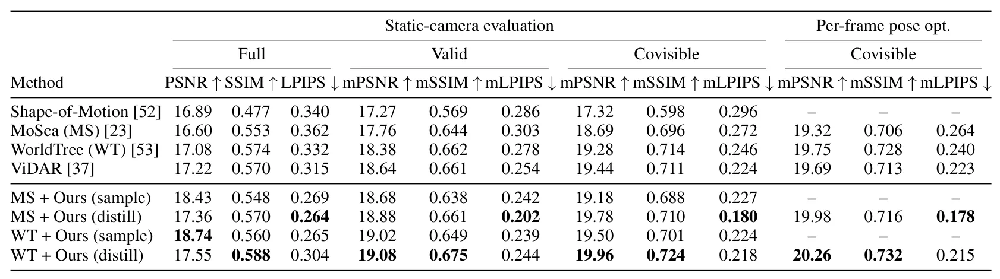
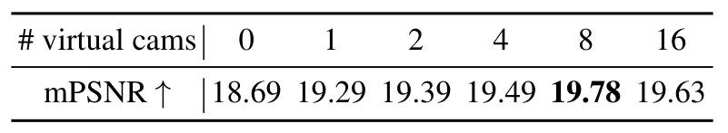
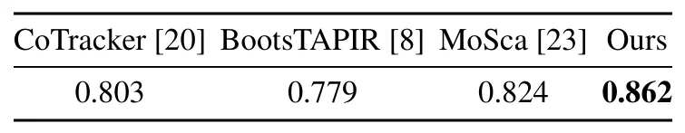

World from Motion：从单目视频生成动态 3D Gaussian 重建World from Motion: Generative Dynamic Gaussian Reconstruction from Monocular Video
直接命中 3DGS、单目动态三维重建和 4D reconstruction，是今天三维重建方向最值得优先跟踪的论文。
一句话工作总结
把视频生成模型和动态 3DGS 蒸馏结合，用单目视频恢复更完整一致的 4D Gaussian 场景。
摘要
World from Motion 面向单目视频生成可自由渲染的动态 3D Gaussian 表示。方法用 video model 条件化密集、像素对齐的渲染信号，编码外观、几何和沿输入/目标相机轨迹的 3D 场景运动，以修正单目初始重建中的 artifact 并补全缺失区域。训练数据由对齐多视角视频对和动态 3DGS 表示构成，并模拟单目重建 artifact；测试时再把生成的新可见区域和运动蒸馏回单个一致、高质量动态 3DGS。作者声称在 4D reconstruction 上达到新 SOTA，并能泛化到大视角变化和复杂动态的野外视频。
We present World from Motion, a method for generating freely renderable dynamic 3D Gaussian representations from monocular videos. Our approach conditions a video model on dense, pixel-aligned renderings that encode appearance, geometry, and 3D scene motion along both input and target camera trajectories to correct rendering artifacts and fill in missing regions from an initial reconstruction. To train this model, we construct a dataset of aligned multiview video pairs and dynamic 3DGS representations, with simulated artifacts characteristic of monocular reconstruction. At test time, we distill the model's generations, including newly observed regions and motions, back into a single consistent, high-quality dynamic 3DGS, improving both novel-view synthesis and the underlying 3D motion. Our method sets a new state of the art in 4D reconstruction and seamlessly generalizes to in-the-wild videos with large viewpoint changes and dynamic motions.
中文解读摘录
- 为什么看：今天最贴近 3DGS/三维重建主线的论文。目标是从单目视频恢复可自由渲染的动态 3D Gaussian 表示，并处理单目重建常见的遮挡、缺失区域和动态运动误差。
- 方法要点：用 video model 条件化密集、像素对齐的渲染，包括外观、几何和沿输入/目标相机轨迹的 3D scene motion；训练数据由对齐多视角视频对和动态 3DGS 表示构成，并模拟单目重建 artifact；测试时把生成的新可见区域和运动蒸馏回单个一致动态 3DGS。
- 结果信号：作者声称刷新 4D reconstruction SOTA，并能泛化到大视角变化和复杂动态的 in-the-wild 视频。
- 跟踪建议：重点看初始化动态 3DGS 的来源、相机轨迹要求、蒸馏后几何/运动一致性，以及能否与 SLAM 前端估计的相机轨迹和动态物体分割对接。
- 链接：abs · PDF
图表/页面预览

{kind=link}

{kind=link}

{kind=link}

{kind=link}

{kind=link}

{kind=link}
